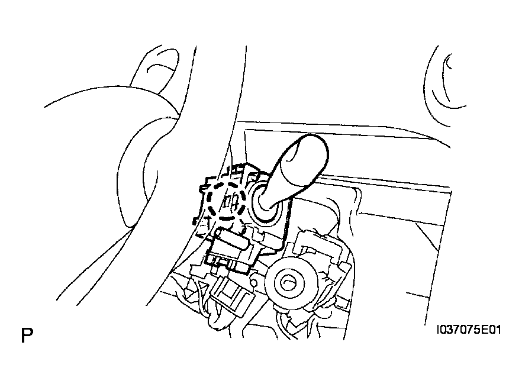

Wiper Switch: Installation
INSTALL WINDSHIELD WIPER SWITCH ASSEMBLY
Attach the claw to install the wiper switch.
Connect the connector.
INSTALL STEERING COLUMN COVER (See
INSTALLATION
)
CONNECT CABLE TO NEGATIVE BATTERY TERMINAL
Fig 1: Installing Windshield Wiper Switch

Courtesy of © TOYOTA, LICENSE AGREEMENT TMS1002